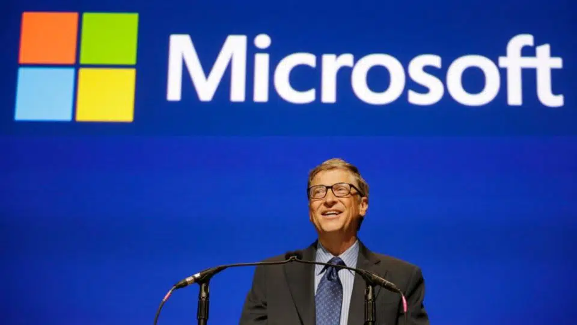

net
net
TUDO sobre a Microsoft: a história que revolucionou a computação
A Microsoft é indiscutivelmente a maior e mais influente empresa de software do mundo. Hoje vamos conhecer sua história e evolução!

De hackear o computador da escola a
construir uma empresa multibilionária, Bill Gates,
juntamente com
seu colega de escola, Paul Allen, criou a Microsoft como um acrônimo de Micro-Computer and
Software. Hoje, a Microsoft é um gigante no negócio de computação, tecnologia de telefonia móvel,
gadgets de jogos e muito mais. Vamos nos
aprofundar um pouco mais para entender a história
da Microsoft e sua evolução que transformou o
significado dos computadores para as gerações do
passado e do presente.
História da Microsoft
Em uma época em que os computadores eram difíceis de entender, Bill Gates e Paul Allen faltavam às aulas do ensino médio para compreender a mecânica dos computadores na sala de informática.
O relutante Gates ingressou em Harvard como estudante de direito em 1973. Mas após uma forte persuasão de Paul Allen, que trabalhava como programador de software em Boston, Gates abandonou Harvard para trabalhar em tempo integral em seus projetos.
Em 1975, eles receberam um projeto do MITS para escrever uma linguagem de programação, que ganhou o nome de Altair BASIC. O acordo com a Altair os motivou a iniciar sua própria empresa – a Microsoft no Novo México com Gates como seu primeiro CEO.
O computador não era nada semelhante ao que conhecemos hoje, e a internet era uma rede estranha, restrita basicamente às instituições acadêmicas.
Mas Gates e Allen decidiram produzir algo como um sistema operacional para o Altair 8800, o primeiro “computador pessoal”. Alguns anos depois, o MS-DOS se tornaria o sistema operacional regular para computadores. Entretanto, um dos maiores sucessos da história da Microsoft viria com o lançamento do Windows no mercado, com sua interface inovadora.